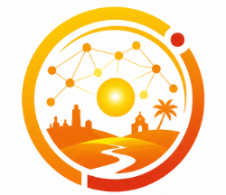

O Observatório Digital reúne indicadores sociais, econômicos e culturais do município de Camaçari, organizando informações oficiais em uma plataforma interativa que facilita a compreensão da realidade local e apoia pesquisas, projetos e políticas públicas.
Indicadores econômicos e financeiros do município.
O PIB per capita de Camaçari é um dos maiores da Bahia, impulsionado principalmente pelo polo industrial.
Indicadores relacionados à violência e proteção social.
Indicadores relacionados à qualidade urbana, saneamento e moradia.
Indicadores referentes às comunidades tradicionais de matriz africana.
Os povos de terreiro constituem parte essencial da memória, da identidade cultural e das tradições afro-brasileiras presentes em Camaçari. Além de espaços religiosos, representam centros de preservação histórica, resistência cultural e transmissão de saberes.
Todos os indicadores apresentados foram obtidos em bases públicas oficiais e organizados para facilitar a compreensão da realidade socioeconômica de Camaçari.
Os gráficos possuem finalidade educativa e informativa, podendo ser atualizados conforme a publicação de novos levantamentos pelos órgãos responsáveis.
